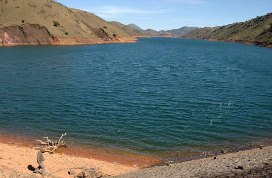
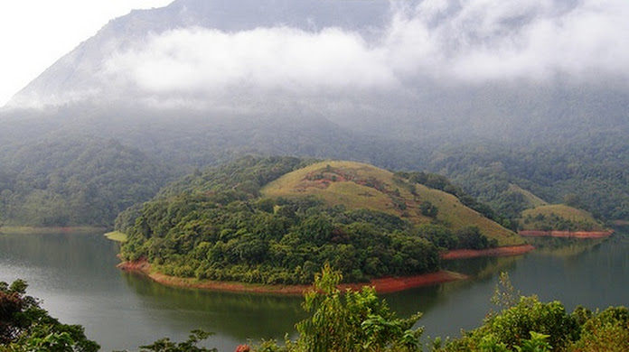

Palakkad Fort
Tipu's Fort, also known as Palakkad Fort, is a beautifully maintained edifice in Palakkad district and was an important military base in the past.It was built by Hyder Ali of Mysore in 1766 and preserved by Archeological Survey of India.

Mukurthi National Park
The park is characterised by montane grasslands and shrublands interspersed with sholas in a high altitude area of high rainfall, near-freezing temperatures and high winds. It is home to royal Bengal tiger and Asian elephant

Siruvani Dam
The sprawling forest, which merges with the woods of Tamilnadu, is home to the popular tourist destination of Palakkad district – Siruvani dam site. The mineral-rich water from Siruvani reservoir nourishes the district of Coimbatore